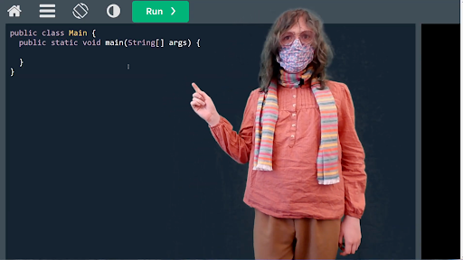

Creating Educational Resources for FIRST Robotics Competition Programming
Evergreen Spanos, Metro Early College High School
Dr. Chris Orban, Department of Physics, The Ohio State University
Introduction
Programming in FIRST Robotics Competition (FRC) is in many ways very distinct from normal programming. It is heavily dependant on a unique library, called WPILib, purpose built for FRC Programming. This library, developed by students at Worcester Polytechnic Institute, introduces several new Classes and Tools to Java, all of serve to remove the tedium of directly programming a complex robot. This library is fairly well documented, though much of its official documentation is severely outdated given updates to the tools provided. Several resources exist to help those learning how to program using WPILib, and many of these resources convey information perfectly well to those who are already familiar with programming. Many of them, however, fall short when it comes to instructing those who lack this prior knowledge of programming.
Objectives
The Goal of this Project:
Create educational resources for FRC programming that are thoroughly comprehensible to those who lack experience with programming in general. This should be done in a combined written and video format.
Determine what is of sufficient difficulty that programmers may encounter difficulty as opposed to that which they can learn on their own.
Develop a way for new programmers to experiment with robot code without the need for a robot on which they can test.
Create a directory for the above resources that can be easily accessed and navigated by those looking to learn.
Determination of Subjects Covered
Methods
To determine what subjects were of significant importance to be covered as a part of this resource, the following steps were taken.
Identify what topics are of any relevance to Programming in FRC. For instance, the operation of motors is relevant while web development is not.
Survey programmers experienced with FRC to determine what is more or less important to be covered by these resources.
Results
After surveying people experienced with Programming for FRC, the following became apparent.
All fundamental concepts within Java are considered to be of moderate-high value for new programmers to learn.
The installation and general operation of WPILib are considered to be of similarly high relevance.
It is considered marginally more important for people to understand how to program CAN Motor Controllers over PWM Motor Controllers, though both are of great significance.
Production of Resources
Methods
To actually develop this resource on a functional level, the following steps were taken.
Use the above data to determine what should be covered as a part of this resource.
Create written explanations of said topics that one could theoretically follow through reading.
Convert said written explanations into equivalent video guides, appealing to people of various learning styles.
Results
Written explanations were able to be completed for many of the tasks presented, and can now be utilized freely by those looking to learn programming.
A video guide for the fundamentals of programming in Java within the context of FRC was able to be fully completed and is available alongside the equivalent written guide.

Future Work
This resource is far from complete. Despite the work that has already been completed, there are still many written guides that still need to be written, along with their accompanying video guides. Additionally, these guides could potentially be expanded in the future to include guides for other relevant languages as well, making it vastly more versatile.
Conclusions
This resource is meant to be exactly that, a resource. It is meant to be something that can be used by anyone, regardless of experience, which it does very successfully. It allows those who otherwise would lack mentors who are proficient with the necessary libraries to learn how to program for FRC without assuming a level of proficiency.
Patterson, D. A. (2006). Computer science education in the 21st century. Communications of the ACM, 49(3), 27-30.
Fouh, E., Akbar, M., & Shaffer, C. A. (2012). The role of visualization in computer science education. Computers in the Schools, 29(1-2), 95-117.
Fagin, B. S., & Merkle, L. (2002). Quantitative analysis of the effects of robots on introductory Computer Science education. Journal on Educational Resources in Computing (JERIC), 2(4), 2-es.
Viana, J., & Peralta, H. (2021). Online learning: From the curriculum for all to the curriculum for each individual. Journal of New Approaches in Educational Research, 10(1), 122-136.
Maheshwari, S., Jain, P., Ligon, B. L., & Thammasitboon, S. (2021). Twelve tips for creating and supporting a meaningful asynchronous learning as parts of virtual transition of a curriculum. MedEdPublish, 10, 111.
Buckhaults, C. (2009, March). Increasing computer science participation in the first robotics competition with robot simulation. In Proceedings of the 47th annual ACM Southeast Conference (pp. 1-4).